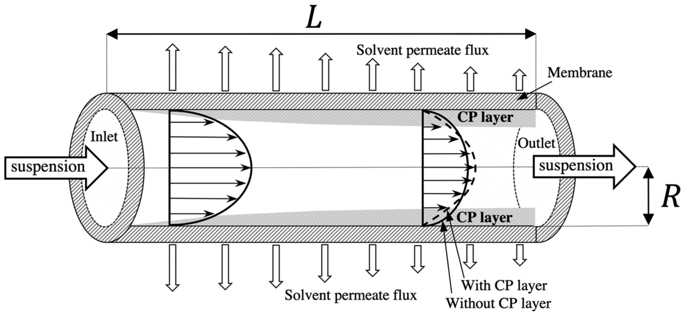

Developing the Measurement Techniques and Facilities needed for Physically Representative Combustion Modeling
Improving ABOi Transplantation with Fluid Mechanics
There are more than 808,000 Americans who are living with end-stage renal disease (ESRD); 68% (550,000) have not received the preferred treatment of transplantation and are instead on dialysis.
If a transplant recipient receives a blood group incompatible (ABOi) kidney, their natural antibodies will attack the kidney leading to graft loss/rejection.
To expand the number of transplants performed, researchers have developed desensitization methods which lower recipient ABO antibody levels.
It has been well established that if recipient antibody levels are below, conservatively, a 1:8 titer that transplant across the ABOi barrier is possible.
In the US, the currently practiced desensitization methods non-selectively remove a recipient's antibodies and block their ability to replenish antibodies.
This leaves a transplant recipient's in an immunocompromised state pre-transplant.
I spent the summer of 2026 working to revive research conducted by my father in the late 90s which developed a patented selective antibody removal device which could potentially lead to less risk associated with ABOi transplant thereby increasing accessibility to transplantation for patients with ESRD.
My work built upon proof-of-concept research [1] which showcased selective removal of A- and B- type antibodies from whole blood through the use of a modified dialysis filter with type A/B antigens bound to the inside surface of the filter's thousands of microscopic tubes.
By investigating what fluid mechanics may have led to these experimental findings, I identified that models developed for monodisperse particle systems had applicability to capturing the dynamics of the device.
These findings may present the opportunity to optimize the dynamic operating conditions for antibody removal rate and capacity which is currently being drafted as an NIH SBIR grant.

The concentration polarization (CP) layer is formed from membrane-impermeable particles collecting near the wall. Figure retrieved from [2].
The fluid system used to selectively remove antibodies from blood can be studied as a cross-flow ultrafiltration (UF) system where the filtered fluid is a colloidal suspension.
Past studies have characterized the dynamics of UF systems as the performance of a filtration system can be reduced if a layer of membrane-impermiable particles develops and inhibits further filtration.
This presented the need for extensive modeling to find optimal filtration conditions which minimize the effect of this membrane-impermiable particle layer.
Blood is a colloidal suspension which contains antibodies which behave as Brownian particles.
UF models present the opportunity to explore how device opporating conditions can induce a layer of antibodies on the luminal side of a filter tube.
Optimizing for maximum development of an antibody layer near the wall-bound type A/B antigen may accelerate selective removal of type A/B antibodies from whole blood.
The development of a technology which selectively removes specific blood-borne molecules has the potential to improve upon non-selective methods used to treat many immunological diseases as well as increase the rate of ABOi transplant within the USA and elsewhere.
References
[1] Mariah S. Hout, Keith E. LeJeune, Terry M. Schaack, Duke K. Bristow, and William J. Federspiel. Specific removal of anti-a and anti-b antibodies by using modified dialysis filters. ASAIO Journal, 46(6):702–706, November 2000. ISSN 1058-2916. DOI: 10.1097/00002480-200011000-00010. PMID: 11110293.
[2] Gun Woo Park and Gerhard Nägele. Modeling cross-flow ultrafiltration of permeable particle dispersions. The Journal of Chemical Physics, 153(20):204110, November 2020. ISSN 0021-9606. DOI: 10.1063/5.0020986. PMID: 33261767.